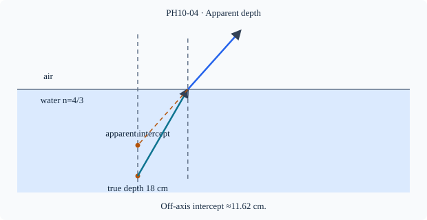

Prerequisite bridge
PH10-02
Before starting, identify the reference frame, directed rays, units and applicable geometric assumptions. Unbound prerequisites remain provisional.
Connected textbook foundation (preserved from PR #5)
4. Apparent depth: do not universalize a small-angle shortcut
Looking into water from above, the bottom may appear shallower than its actual depth. The eye receives refracted rays and extends them backward as if they had traveled straight throughout. In a near-normal, paraxial arrangement with a plane interface, the familiar approximate relation “apparent depth = real depth × n_{\rm observer}/n_{\rm object}” can be derived geometrically.
That relation is not exact for arbitrary viewing angles. A D3 model-selection question should ask whether the scene is sufficiently near-normal and whether the observer and object media are correctly identified. If a student copies the apparent-depth formula onto an oblique or strongly curved interface without checking its assumptions, the error is a model problem rather than an arithmetic one.
Build and check the model
For a point at true depth d below a planar interface, an upward ray at angle θ₁ in medium n₁ emerges at θ₂ in observer medium n₂. Back-projecting the refracted ray gives apparent axial intercept d'=d tanθ₁/tanθ₂. At small angles Snell gives θ₂≈(n₁/n₂)θ₁, so d'≈d n₂/n₁. Outside the paraxial limit intercepts depend on ray angle; no unique universal apparent depth from all rays.
Worked anchor
A coin 18 cm under water n=4/3 viewed near normal from air appears at ≈13.5 cm. At water angle 30°, air angle ≈41.81°; d'=18 tan30/tan41.81≈11.62 cm, illustrating off-axis difference.
Condition and limiting check
The paraxial apparent-depth formula assumes flat interface, homogeneous media, point near axis and small angle. A curved surface changes the model.
Misconception repair
Do not use true depth divided by water index without checking observer medium and angular conditions.
Reasoning diagram

Self-check before transfer
Mark 20 cm below flat interface in n=1.5; air observer near normal. Estimate apparent depth.
Check the reasoning
d′≈20/1.5≈13.33 cm; paraxial approximation only.
Source and figure status
Curriculum pointer CBSE10; candidate scope only. Preserved chapter manuscript. Original subtopic-specific figure attached. Scientific figure and teaching-sufficiency reviews remain HOLD.